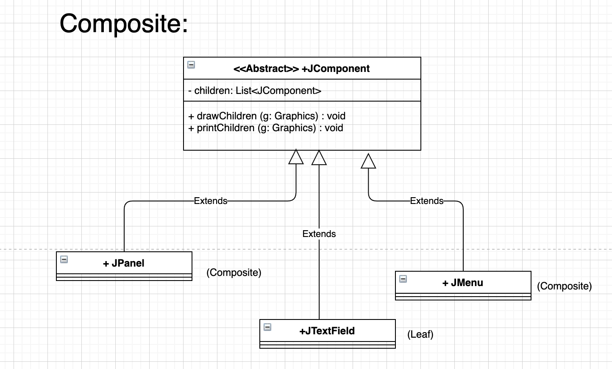
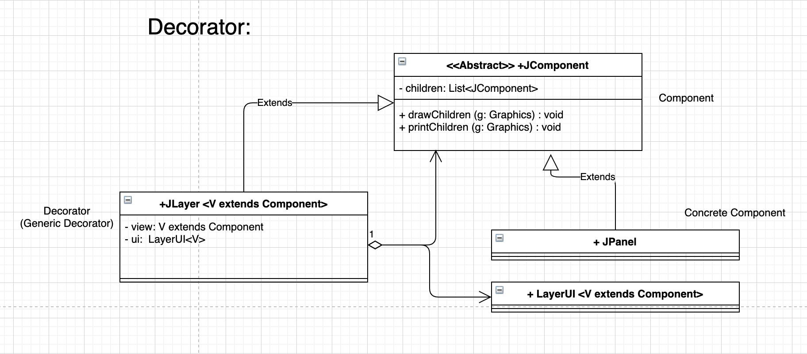

🐾 Discussion Week 7: Command and Strategy pattern 🐾
What are the differences between Command and Strategy patterns?
- Intention
- Command pattern adds flexibility to “when” and “where” a behaviour is executed
- Strategy pattern adds flexibility to “how” a behaviour is executed
- Solution
- Command pattern packs the request to execute code in the
Commandobject, and lets the invoker invoke the code as needed through callingexecute()method. - Strategy pattern uses abstract
Strategyin the context, and varies the actual behaviour by extendingStrategy.
- Command pattern packs the request to execute code in the
In terms of maintainability, what are the benefits and consequences of applying design patterns in your code?
- Comprehensibility
- If the design pattern is already in the reader’s knowledge base, the reader is likely to identify the design pattern by reading part of the code, and then they will be able to map the other parts of the code to their design schema. A mapping between the code and the reader’s design schema helps the reader to build a mental model more easily, as they would have an expectation of what the code is doing, thus enhancing the efficiency of comprehension. If the reader’s mapping between the code and their design schema is correct, their understanding of the code is more likely to be correct, thus also enhancing the effectiveness of comprehension.
- However, if the design pattern is not in the reader’s knowledge base, it might take the reader more time to read the extra interfaces/abstract entities to interpret the structure and intention of the code. In such case, the efficiency of comprehension might be reduced on the reader’s first exposure to a design pattern.
- Alterability
- Many design patterns captures the structure of a general solution by abstract entities, and new behaviours can be added through adding new concrete implementations of the abstract entity.
- In this way, design patterns reduces the number of existing classes to be changed.
- Therefore, in terms of C/N, design patterns lead to more abstract interface/class (bigger N), while reduces needs for changing existing classes (smaller C), so the C/N will be reduced.
- In terms of effectiveness, fewer changes to existing code means fewer chances of breaking existing functionalities.
- In terms of efficiency, design patterns reduce the need to go into the details of existing implementation to make changes, thus making it faster to implement the changes.
🐾 Discussion Week 8: Composite and Decorator pattern 🐾
 What are the differences between Composite and Decorator patterns?
- Problem solved:
- Decorator pattern wants “variation” - adds new functionality
- Composite pattern wants “uniform” - treats parts and whole the same way
- Aggregation relationship between composite/decorator and component
- Decorator pattern’s aggregation relationship is one-to-one, where one decorator aggregates one component.
- Composite pattern’s aggregation relationship is one-to-n, where one composite aggregates arbitrary number of components.
- Although they both supports arbitrary layers of abstraction.
🐾 Discussion Week 9: Design Smells 🐾🐾🐾
How does each smell affect alterability?
Inappropriate Intimacy
If two classes are intimate and depend on many details of each other, changes in one class is likely to make it necessary to adapt the other class accordingly. This increases the classes to be inspected and changed, and reduces the effectiveness and efficiency of making changes.
Long Method
- A long method is likely to be doing multiple things, and therefore there will be multiple reasons that require the method to be changed. The developer has to dig into the long method and locate the specific lines of code to be modified, reducing the efficiency of making changes.
- There is also likely to be temporary variables being manipulated in the long method, which might go wrong when changes are being made, reducing effectiveness.
Comments (a.k.a. Deodorant)
Valid comments are relevant to the code. Therefore, when code needs to be changed, the comments have to be changed to remain valid. This increases the job to be done when making changes, reducing efficiency.
How big can a class be before it gets too big? How long can a method be before it gets too long?
Two useful actionable criteria:
- Check how much of a proportion the class takes in the whole programme, or how much of a proportion the method takes in the whole class. If it takes a significant proportion of the total LoC (for example, more than 1/3), it is possible that the class/method is shouldering too many responsibilities, and should be broken down.
- Examine how many things the class/method is doing - how many reasons will cause the class/method should be changed. If the class/method has multiple responsibilities, it should be broken down even when the number of lines are small.
🐾 Discussion Week 10: Testability of Kalah 🐾🐾🐾
It’s a trade-off
A programme of high testability might be hard to comprehend and alter.
For high testability, we will need to make the methods very “customisable” for different scenarios/corner cases. This means the method will need to take in more arguments telling it about the different cases, which contradicts with our goal for comprehensible code where methods are simple and argument lists are short.